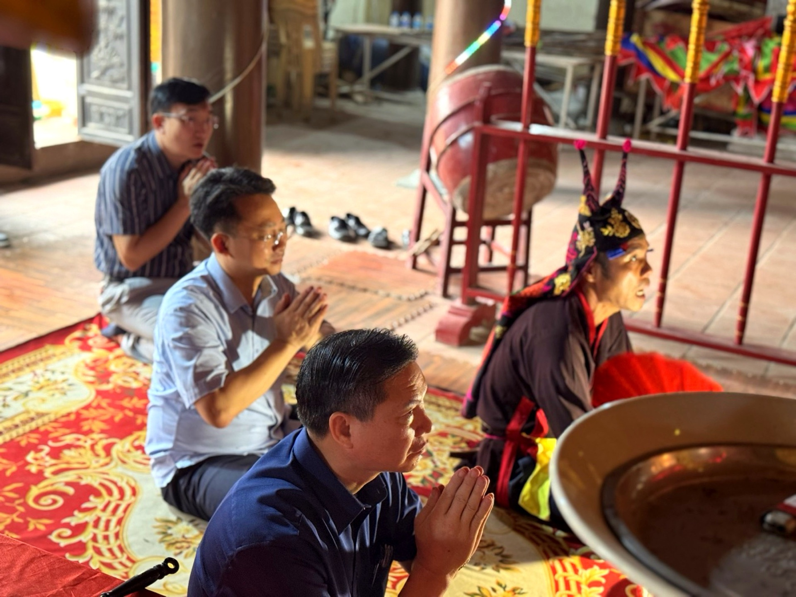

Loại hìnhTypeType
Di tích lịch sửHistorical siteSite historique

Đình Ái Nàng là di tích kiến trúc – lịch sử đặc sắc tại thôn Ái Nàng, xã Mỹ Đức. Đình thờ Thành hoàng làng Ái Nàng – vị thần được triều Nguyễn phong sắc "Bảo an chính trực hựu thiện đôn ngưng chi thần", biểu trưng cho sự bình an và phúc lành che chở cho cộng đồng bao đời.
Tên gọi "Ái Nàng" hàm chứa ý nghĩa yêu thương, hòa hợp và trân trọng nét đẹp nữ tính trong văn hoá tín ngưỡng dân gian địa phương. Công trình được thiết kế theo kiểu chữ Đinh (Đại bái – Hậu cung), xây dựng bằng gỗ lim và đá xanh bền vững; mái đao cong mềm mại, lợp ngói mũi hài truyền thống, đỉnh bờ nóc trang trí hình "lưỡng long chầu nguyệt" mang ý nghĩa tâm linh sâu sắc. Hệ thống cột gỗ bên trong chạm khắc tinh xảo hình rồng phượng và hoa lá, thể hiện tài hoa nghệ nhân thời Hậu Lê – Nguyễn.
Đình còn lưu giữ hệ thống sắc phong triều Nguyễn – di vật quý hiếm phản ánh bề dày lịch sử của vùng đất và cộng đồng người Mường Cốc.
Đình Ái Nàng is a distinctive architectural and historical relic in thôn Ái Nàng, Mỹ Đức commune. It worships the Village Guardian Spirit of Ái Nàng – a deity honored by the Nguyễn dynasty with the title "Bảo an chính trực hựu thiện đôn ngưng chi thần," symbolizing peace and blessings protecting the community for generations.
The name "Ái Nàng" embodies meanings of love, harmony, and appreciation for feminine beauty in local folk beliefs. The structure is designed in the "Đinh" style (Đại bái – Hậu cung), built with durable lim wood and blue stone; its gently curved eaves are covered with traditional "mũi hài" tiles, and the roof ridge is adorned with "lưỡng long chầu nguyệt" (two dragons adoring the moon) figures, carrying deep spiritual significance. The interior wooden columns are exquisitely carved with dragon, phoenix, and floral motifs, showcasing the artistry of Hậu Lê – Nguyễn era artisans.
The communal house still preserves Nguyễn Dynasty royal decrees – rare artifacts reflecting the rich history of this land and the Mường Cốc community.
Đình Ái Nàng est un vestige architectural et historique distinctif à thôn Ái Nàng, commune de Mỹ Đức. Il vénère l'Esprit Gardien du Village d'Ái Nàng – une divinité honorée par la dynastie Nguyễn avec le titre "Bảo an chính trực hựu thiện đôn ngưng chi thần", symbolisant la paix et les bénédictions protégeant la communauté depuis des générations.
Le nom "Ái Nàng" véhicule les significations d'amour, d'harmonie et d'appréciation de la beauté féminine dans les croyances populaires locales. La structure est conçue dans le style "Đinh" (Đại bái – Hậu cung), construite en bois de lim et en pierre bleue durables ; ses toits en forme de lame incurvée sont recouverts de tuiles traditionnelles "mũi hài", et le faîte est orné de motifs "lưỡng long chầu nguyệt" (deux dragons adorant la lune), porteurs d'une profonde signification spirituelle. Le système de colonnes en bois à l'intérieur est finement sculpté de motifs de dragons, de phénix et de fleurs, témoignant du talent des artisans des époques Hậu Lê – Nguyễn.
La maison communale conserve encore des décrets royaux de la dynastie Nguyễn – des artefacts rares reflétant la riche histoire de cette terre et de la communauté de Mường Cốc.
Đình Ái Nàng hướng tới được đưa vào tuyến di sản – văn hoá thôn Ái Nàng như điểm tham quan kiến trúc tín ngưỡng trọng tâm. Giai đoạn tiếp theo phối hợp với cộng đồng địa phương xây dựng tài liệu thuyết minh song ngữ, bổ sung biển giải thích di vật và sắc phong, kết nối hoạt động lễ hội truyền thống vào sản phẩm du lịch văn hoá – di sản của dự án Mường Cốc. Điểm đến Du lịch cộng đồng Mường Cốc, Xã Mỹ Đức – Thành phố Hà NộiAi Nang Communal House aims to be included in the Ai Nang village heritage and culture route as a central religious architectural attraction. The next phase involves collaborating with the local community to develop bilingual interpretive materials, add explanatory signs for artifacts and royal decrees, and integrate traditional festival activities into Muong Coc's cultural and heritage tourism products. Muong Coc Community-Based Tourism Destination, My Duc Commune – Hanoi City.Le Đình Ái Nàng vise à être intégré au circuit du patrimoine et de la culture du village de Ái Nàng comme un point d'intérêt architectural religieux central. La prochaine phase implique une collaboration avec la communauté locale pour développer des documents d'interprétation bilingues, ajouter des panneaux explicatifs pour les artefacts et les décrets royaux, et intégrer les activités des festivals traditionnels dans les produits de tourisme culturel et patrimonial du projet Mường Cốc. Destination de Tourisme Communautaire Mường Cốc, Commune de Mỹ Đức – Ville de Hà Nội.